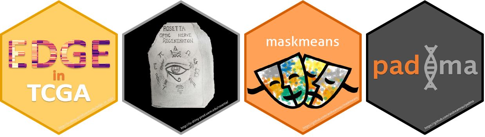

Multi-omic data integration
February 10, 2023
Related software
- rpl: Randomized pairwise likelihood method for complex statistical inferences 🔗
- padma: Pathway deviation scores using multiple factor analysis 🔗
- Regeneration Rosetta: An R/Shiny interactive web application to explore regeneration-associated gene expression and chromatin accessibility 🔗
- maskmeans: Multi-view aggregation/splitting K-means clustering algorithm 🔗
- Edge in TCGA: An R/Shiny interactive web application for the exploration of drivers of gene expression in The Cancer Genome Atlas 🔗

Related publications
-
Mollandin, F., Gilbert, H., Croiseau, P., and Rau, A. (2022) Accounting for overlapping annotations in genomic prediction models of complex traits. BMC Bioinformatics, 23:65. 🔗 📄 🔄 💻
-
Mollandin, F., Gilbert, H., Croiseau, P., and Rau, A. (2022) Capitalizing on complex annotations in Bayesian genomic prediction for a backcross population of growing pigs. 12th World Congress on Genetics Applied to Livestock Production (3-8 July 2022), Rotterdam, Netherlands.
-
Rau, A., Manansala, R., Flister, M. J., Rui, H., Jaffrézic, F., Laloë, D., and Auer, P. L. (2022) Individualized multi-omic pathway deviation scores using multiple factor analysis. Biostatistics, 23(2):362-379. 🔗 📄 🔄 🔢 💻
-
Mazo, G., Karlis, D., and Rau, A. (2021) A randomized pairwise likelihood method for complex statistical inferences. NA, Submitted. 🔄 💻
-
Godichon-Baggioni, A., Maugis-Rabusseau, C. and Rau, A. (2020) Multi-view cluster aggregation and splitting, with an application to multi-omic breast cancer data. Annals of Applied Statistics, 14:2, 752-767. 🔗 📄 🔢
-
Foissac, S., Djebali, S., Munyard, K., Villa-Vialaneix, N., Rau, A., Muret, K., Esquerre, D., Zytnicki, M., Derrien, T., Bardou, P., Blanc, F., Cabau, C., Crisci, E., Dhorne-Pollet, S., Drouet, F., Gonzales, I., Goubil, A., Lacroix-Lamande, S., Laurent, F., Marthey, S., Marti-Marimon, M., Momal-Leisenring, R., Mompart, F., Quere, P., Robelin, D., San Cristobal, M., Tosser-Klopp, G., Vincent-Naulleau, S., Fabre, S., Pinard-Van der Laan, M.-H., Klopp, C., Tixier-Boichard, M., Acloque, H., Lagarrigue, S., Giuffra, E. (2019) Multi-species annotation of transcriptome and chromatin structure in domesticated animals. BMC Biology, 18:48. 🔗 📄 🔄
-
Dhara, S., Rau, A., Flister, M., Recka, N., Laiosa, M., Auer, P., and Udvadia, A. (2019) Cellular reprogramming for successful CNS axon regeneration is driven by a temporally changing cast of transcription factors. Scientific Reports, 9:14198. 🔗 📄 🔄 🔢
-
Rau, A., Dhara, S., Udvadia, A., and Auer, P. (2019) Regeneration Rosetta: An interactive web application to explore regeneration-associated gene expression and chromatin accessibility. G3: Genes|Genomes|Genetics, 9(12): 3953-3959. 🔗 📄 🔢
-
Rau, A., Flister, M. J., Rui, H. and Livermore Auer, P. (2019) Exploring drivers of gene expression in The Cancer Genome Atlas. Bioinformatics, 35(1): 62-68. 🔗 📄 🔄 🔢